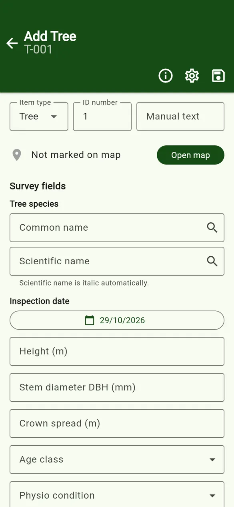
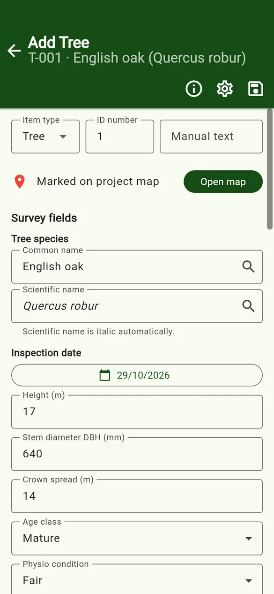
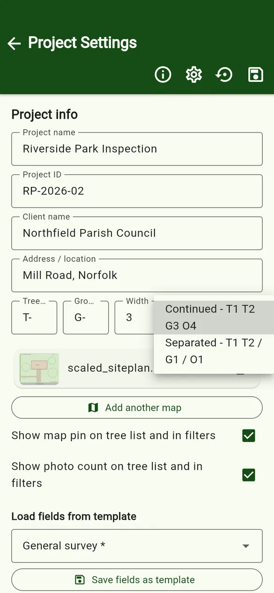
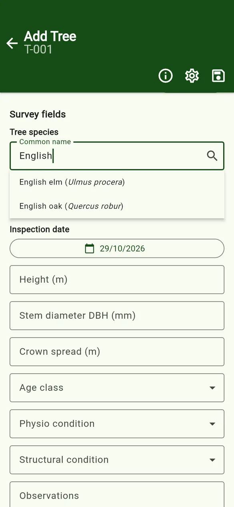
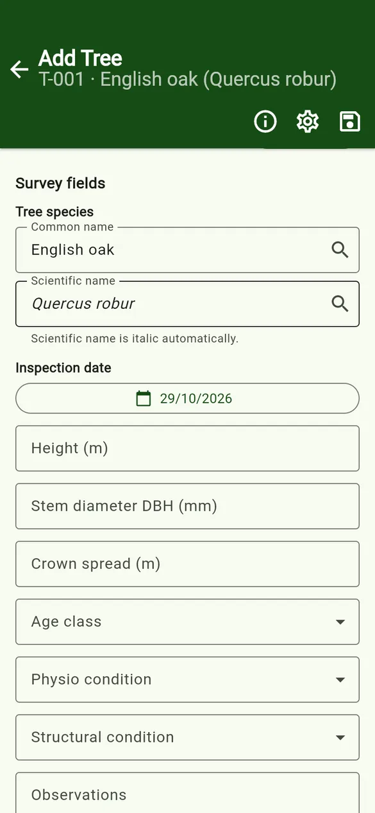
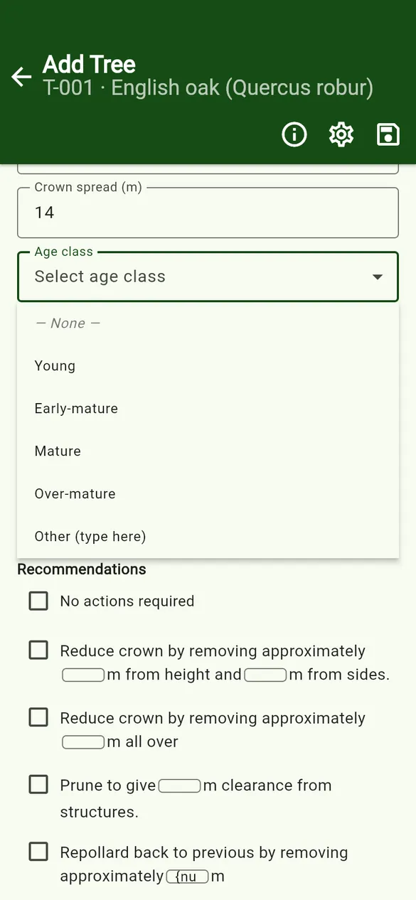
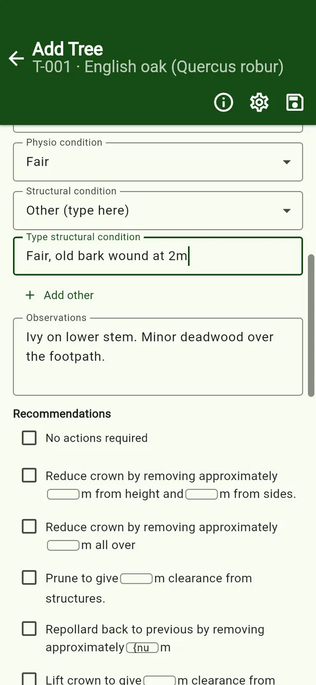
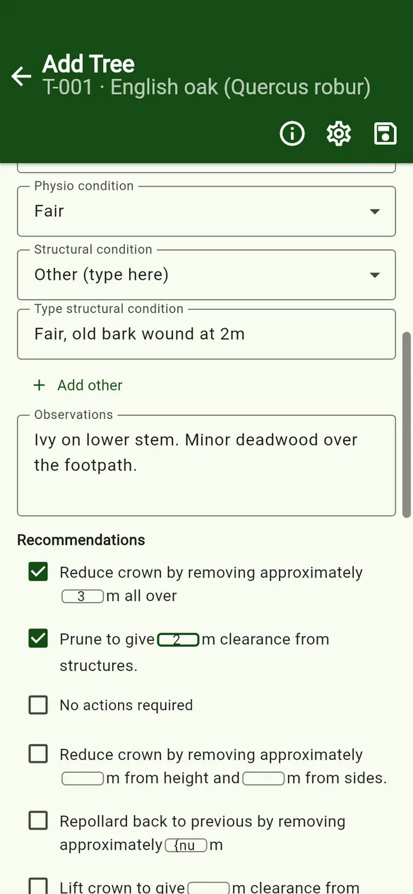
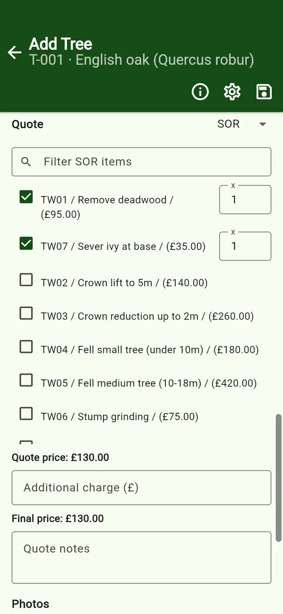

User guides › Tree form
Tree form
Item type, ID numbering and manual text, species, dropdowns with Other, checklists, quotes and saving.
The tree form records one item. Tap + Add Tree on the tree list for a blank form, or tap an existing row to edit it. The fields come from the project’s data structure.


Item type, ID number and manual text
- Item type: Tree, Group or Other. The type sets the ID prefix (for example
T-for trees andG-for groups; Other uses its own prefix). - ID number is filled in automatically with the next free number. You can type a different number.
- Manual text adds your own text to the ID, for example an existing tag number such as
(897). - The prefixes, number width (for example 3 gives
T-001) and numbering style are set in Project settings:- Continued – one sequence for every type: T1, T2, G3, O4.
- Separated – each type counts on its own: T1, T2 / G1 / O1.

Tree species
- Start typing a common name (or a scientific name in the second box).
- Pick a suggestion from the species catalogue. Both names are filled in, and the scientific name is shown in italics automatically.
- If the species is not in the catalogue, type both names yourself. The new species is added to the catalogue when you save the tree.


Inspection date
Every tree has an inspection date, which is set to today on a new tree. Tap it to choose another date.
Field types on the form
| Type | How it works on the form |
|---|---|
| Text | Free text, such as observations. |
| Number | A number box, such as height or stem diameter. |
| Dropdown | Pick one option. — None — clears it, and Other (type here) lets you type something that is not in the list. |
| Multi dropdown | Several dropdowns for the same field. Use Add dropdown to add another. |
| Checkbox | A single yes/no tick. |
| Checklist | Tick any number of options. Ticked options move to the top. Options can include number boxes. |
| Date | A date picker. |
| Location (GPS) | Latitude and longitude, typed or captured with the GPS button. See GPS. |
Dropdowns with “Other”
Choose Other (type here) and a text box appears. Type the value, for example Fair, old bark wound at 2m. Use Add other to add more typed values, and the remove icon to delete one.


Checklists and number boxes
Checklist options written with {num} in the template show a small number box in the sentence, for example Reduce crown by approximately [3]m all over. Type the number after ticking the option. When the tree is exported, the numbers are written into the sentence.

Quote PRO
Quoting is a Pro feature. Each tree can use one of three methods (the project default is set in Project settings):
- Fixed price – type a price.
- Labour – staff × hours × the hourly rate.
- SOR (schedule of rates) – tick items from the project’s SOR list, and set a quantity for each. Search the list with Filter SOR items.
All methods allow an Additional charge and Quote notes. The Final price is worked out for you and added to the project total.

Photos
Tap Add photo at the bottom of the form. See Photos and annotation.
Saving
Tap Save tree (at the bottom, or the save icon at the top). Backing out of the form also saves the tree.
<i> and </i> to make it italic in a text field.